Simulation workbench
The GPCRmd simulation workbench includes a set of online tools for the interactive visualization (Viewer) and analysis (Toolkit) of individual simulations.
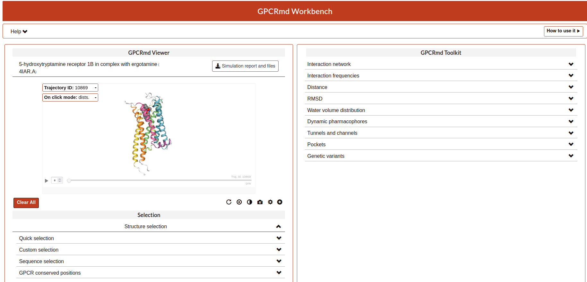{kind=link}
Viewer
This part of the workbench is totally related to the visualization of the proteins using the program MDsrv that internally uses NGL Viewer.
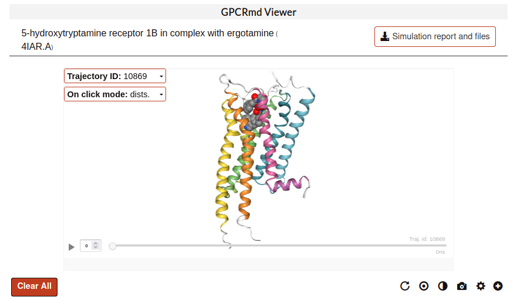{kind=link}
General features:
Mouse controls:
The basic controls with the mouse are:
Left button hold and move: rotate camera around center.
Middle button hold and move: zoom camera in and out.
Middle button click: center camera on atom.
Right button hold and move: translate camera in screen plane.
Left button click: pick atom or distance.
More detailed controls explained in here.
Visual options:
There are three main parts:
Trajectory selection:
Here, the user can select the trajectory that wants to be display:
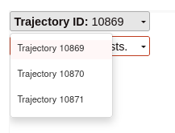{kind=link}
On click mode:
On click show distance mode:
When an atom is clicked, a label with information about it appears. Click at the background to deselect it, the label will disappear. To maintain a label, double-click on an atom. Double-click again on the atom to remove the label.
To draw a distance line between two atoms just single-click one atom after the other. Distances can be removed by double-clicking on one of the atoms at the edges.
It is also possible to remove all the atom labels and distances at once, with the Clear dists. button.
- On click show variants mode:
Click on the blue dots to obtain information on known natural variants of a residue. Data obtained from the gnomAD database.
- On click show mutations mode:
Click on the blue dots to obtain information on mutational experiments done on a residue. Data obtained from GPCRdb.
{kind=link}
Trajectory player:
This bar controls the display of the trajectory along the simulation. The user can run, pause or select an specific frame writing it on the small cell. Also, at the end of the bar it is display the trajectory id and the time in nanoseconds.
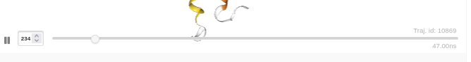{kind=link}
Note
The playback speed is slower while loading frames for the first time. Playback speed is back to normal for frames played a second time.
Extra options:
Also, the user have some extra options:
Clear all: cleans everything on the visualizator.
Reset position: reset the original position of the structure.
Center: center the structure in the middle of the viewer.
Dark background: changes the background between black or white.
Take screenshoot: take a image of the actual point of view.
Advanced visualization: open the structure and trajectories in MDsrv_to use more complex visualization options.
More settings options: more extra functions about the display of the structure in the viewer. Options like show hidrogens, spin the structure, or change the trajectory step size and timeout, among others.
{kind=link}
Selection tools:
Structure selection:
The user can choose one of the selections we propose or define a new one (Customized selection option) using the NGL selection language.
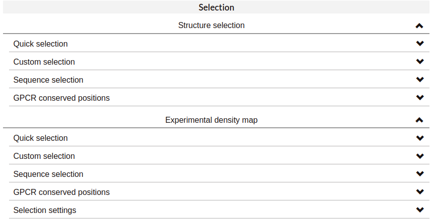{kind=link}
Quick selection:
Quick-selection buttons allow to rapidly display the molecules present at the dynamics. Hover the buttons with your mouse to see the abbreviated name of these molecules, which can be used to create your own selections.
In the case of Structure selections, It is also possible to select the residues or molecules that are found within a certain distance of a ligand. It is only necessary to:
Indicate what you want to visualize (residues or molecules found at the simulation).
Input the wanted threshold distance (in angstroms).
Indicate the molecule type around which the selection is made. Apart from predefined molecules, it is also possible to show the residues/molecules that are close to a personalized selection which, again, can include generic GPCR residue numbering.
If the selection is correct, a green checkmark will appear on the left. More than one distance selection can be displayed at the same time. Selections made with this tool will appear in coral red. The distance selection will be updated for each trajectory frame, as the disposition of the atoms may change.
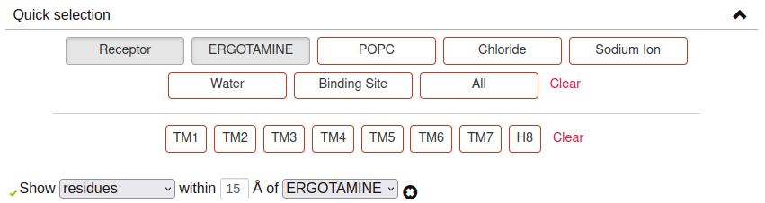{kind=link}
Custom selection:
Use the text input field to specify your personalized representations. You can choose a representation type (licorice, cartoon, etc.) and a coloring scheme (color by element, by chain, etc.).
Selections must be expressed using the NGL selection language. Moreover, to indicate protein residues it is also possible to use generic GPCR residue numbering: Ballesteros-Weinstein (ex. 1.50), GPCRdb structure-based numbering (ex. 1x50) or a combination of both (ex. 1.50x50).
For example, if you input 40-70:P or CLZ, residues numbered from 40 to 70 at the PDB belonging to chain P and Clozapine will be displayed. Another example, this time using a combination of different generic GPCR numbering styles, could be 1.50 - 2x48 or 3.35x35 or SOD.
If your selection includes water and/or membrane molecules that you wish to display, check ‘Include membrane and water’. This may slow down the playback speed of the simulation.
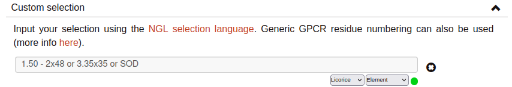{kind=link}
Sequence selection:
The GPCR Workbench also provides the option to select a protein segment from its sequence. Set your selection by clicking at the desired range or ranges of residues. Selected segments will appear at the sequence in green. To deselect a residue range from the sequence, just click on it. Finally, click at Confirm selection: the residue range(s) will be added to a text input field, which you can further modify to adjust the selection. If you want to add new sequence selections, click at the plus button.
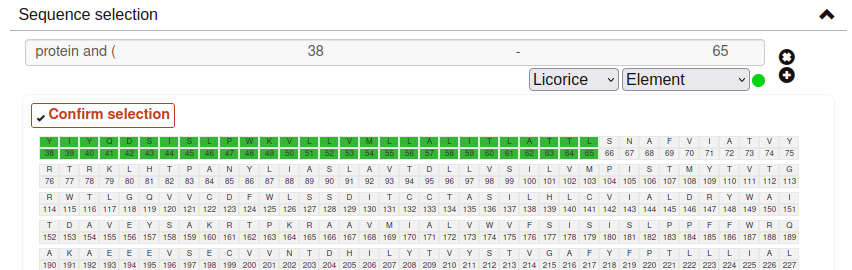{kind=link}
GPCR conserved positions:
This section provides the possibility to rapidly select positions or domains conserved in the different GPCR family classes. The GPCR class of the protein being represented will be selected by default, and therefore the conserved positions/domains corresponding to that GPCR class will be available to visualize.
It is also possible to visualize the positions that correspond to conserved positions from other GPCR classes. For example, if your protein belongs to class A, you can represent the residue that corresponds to class B 2.50 (2.50b). Hover the buttons with your mouse for more information about the conserved positions and motifs, if available.
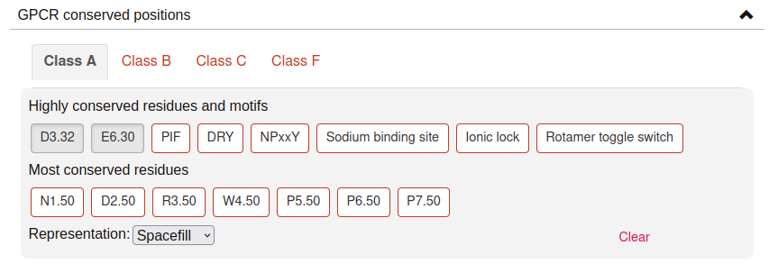{kind=link}
Experimental density map:
Display X-ray or electron microscopy density maps by defining any selection within this section. By default, this will also modify the representation of the molecules of the system. To change this behavior, un-select the option “Apply default representations” within Selection settings.
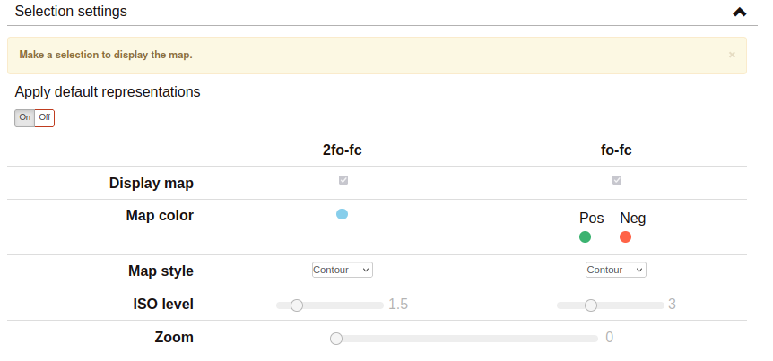{kind=link}
Toolkit
In the landing page of GPCRmd the user can found a selection of tools that are part of the simulation workbench.
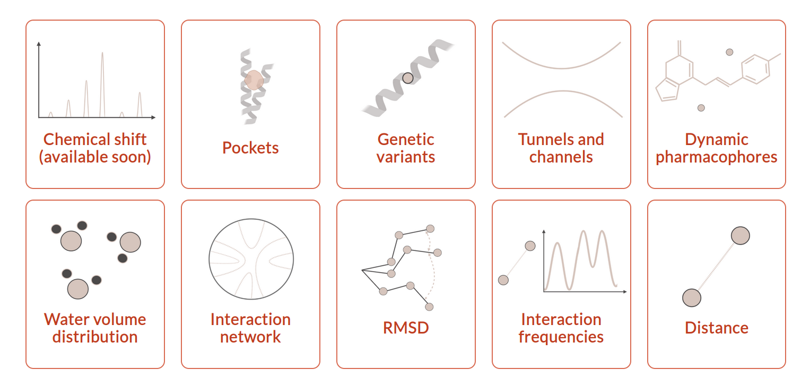{kind=link}
Once, the user selects a tool the web display a table like the search tool but in this case the view will display the tool selected.
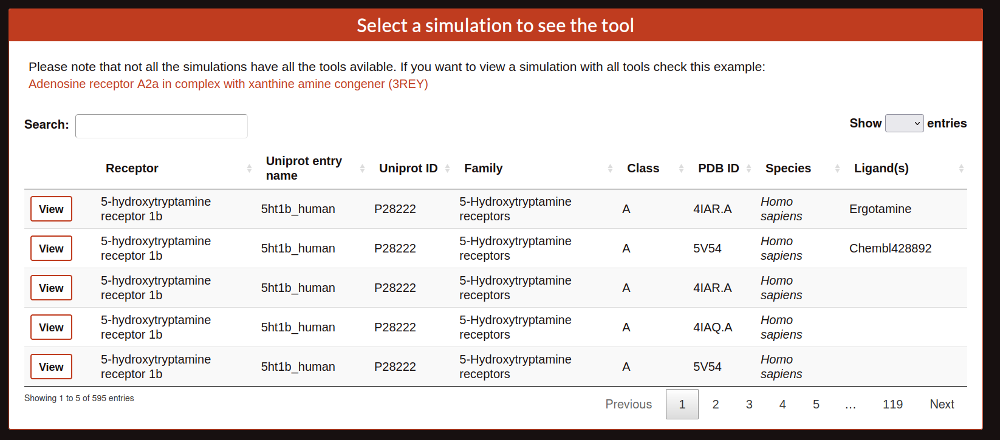 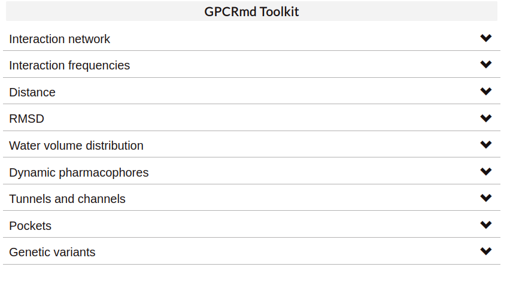{kind=link}
{kind=link}
Interaction network (Flare plots):
Flare Plots are a tool for the study and representation of intra-protein interactions developed at Stanford University by Dr. Fonseca and Dr. Venkatakishnan. This approach makes it possible to obtain a highly visual depiction of complex data, such as the set of interactions formed between protein residues throughout MD simulations, in the form of circular interactive networks named Flare plots. Residue-residue interactions are represented as lines connecting residue pairs. Hover or click a residue to highlight the lines representing the interactions in which it participates.
There are several options available:
- Interaction type: Select the type of interaction to display on the plot.
- Hydrogen bonds:
- Wernet Nilsson criteria (MDTraj): Any combination of donor atoms (NH or OH) and acceptor atoms (N or O) that holds the condition:|AD| < 3.3 Å − 0.00044 * ∠HDA * ∠HDAWhere |AD| is the distance in Angstroms between donor and acceptor heavy atoms, and ∠HDA is the angle formed by the hydrogen atom, donor, and acceptor atoms in degrees. Defined by the MDTraj module function wernet_nilson.
- GetContacts criteria:|AD| < 3.5Å∠AHD < 70°Where A (acceptor) and D (donor) are any atom except hydrogen, carbon or sulphur.Based on GetContacts.
- Salt bridges:|AC| < 4.0ÅWhere:A (anion): ASP/OD1+OD2, GLU/OE1+OE2C (cation): LYS/NZ, ARG/NH1+NH2, HIS/ND1+NE2Based on GetContacts.
- Pi-cation:|AC| < 6.0Å∠CAn < 60°Where:A (aromatic): center(PHE/CG+CE1+CE2), center(TRP/CD2+CZ2+CZ3), center(TYR/CG+CE1+CE2), center(HIS/CG+CD2+CE1)C (cation): LYS/NZ, ARG/NH1+NH2, HIS/ND1+NE2Based on GetContacts.
- Pi-stacking:|A1A2| < 7.0Å∠(n1, n2) < 30°∠(n1, A1A2) < 45°∠(n2, A1A2) < 45°Where:A1, A2 (aromatic rings): center(PHE/CG+CE1+CE2), center(TRP/CD2+CZ2+CZ3), center(TYR/CG+CE1+CE2), center(HIS/CG+CD2+CE1)Based on GetContacts.
- T-stacking:|A1A2| < 5.0Å60° < ∠(n1, n2) < 90°∠(n1, A1A2) < 45°∠(n2, A1A2) < 45°Where:A1, A2 (aromatic rings): center(PHE/CG+CE1+CE2), center(TRP/CD2+CZ2+CZ3), center(TYR/CG+CE1+CE2), center(HIS/CG+CD2+CE1)Based on GetContacts.
- Van der Waals:|AB| < Rvdw(A) + Rvdw(B) + 0.5Where A and B are any non-hydrogen atoms.Based on GetContacts.
Water bridges: Two different residues forming a Hydrogen bond with the same water molecule. Based on GetContacts.
Extended water bridges: Two different residues forming a Hydrogen bond with two different water molecules which also form a hydrogen bond between them. Based on GetContacts.
- Hydrophobic:|AB| < Rvdw(A) + Rvdw(B) + 0.5Where:A, B: ALA+CYS+PHE+GLY+ILE+LEU+MET+PRO+VAL+TRP and element C or SBased on GetContacts.
- Display:
Interacting pairs: Show only a subset of interactions (intra- or inter-helix) or all of them.
Simulation: It is possible to summarize the interactions formed through all the trajectory frames. The frequency of each interaction is represented by the thickness of the lines connecting residues.
Show in structure: Click to display structural representations of the residues selected (clicked) at the flare plot. Unclick to hyde them. If there are no residues selected at the flare plot, nothing will happen.
Clear plot: Click to delete all selections made on the plot.
Download data: Click to download the plot data.
{kind=link}
Interaction frequencies:
Hydrogen bonds:
This tool identifies Hydrogen Bonds formed in a simulation, splitting the results between protein-protein hydrogen bonds and protein-not protein bonds. We use the MDTraj module function wernet_nilson, which establishes a threshold distance of 3.3 Angstroms between the donor and acceptor atoms; this threshold becomes progressively stricter as the angle formed by H-D-A increases (a perfect straight bond is 0 degrees, as the donor atom is central). It’s possible to choose between a few options:
Do not include hydrogen bonds between neighbors: If selected, excludes hydrogen bonds among residues which are less than 5 residues apart. These are usually the hydrogen bonds stabilizing alpha helices.
All hydrogen bonds: If selected, includes hydrogen bonds formed between backbone (BB) atoms or side chains (SC) atoms, in any combination (SC-SC, BB-BB, SC-BB).
Only side-chain hydrogen bonds: If selected, only includes hydrogen bonds formed between side-chain atoms.
Finally, you can set a frequency threshold so only those hydrogen bonds which hold the cited condition in a proportion of the frames greater than the value you have set will appear in the results. You can also define an interval of frames into which perform the analysis.
Results have a “Show Hbond” button next to them which displays the bond in the viewer. At the end of the results table, you can find a “Show All” button, which displays all the bonds in that table at once.
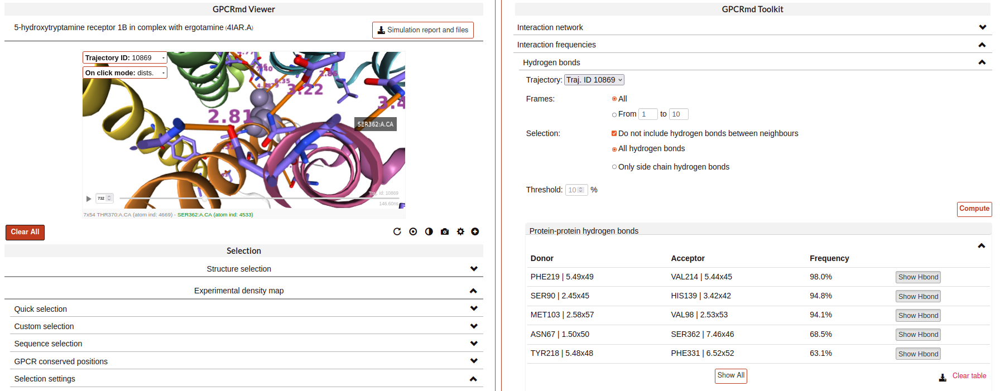{kind=link}
Ligand receptor contacts:
This analysis tool calculates the frequency of interaction between the protein residues and a given ligand across a trajectory. When the distance between any of their atoms and the ligand is smaller than the threshold, it is considered to be an interaction. It is possible to chose which residue atoms will be considered (heavy atoms only or all atoms). The result is presented as a table and a plot, which can be downloaded as an image. The residues that are found to interact can be displayed at the viewer screen (shown in purple), which can be deactivated using the “Display interacting residues” checkbox. It is also possible to download the interaction data obtained.
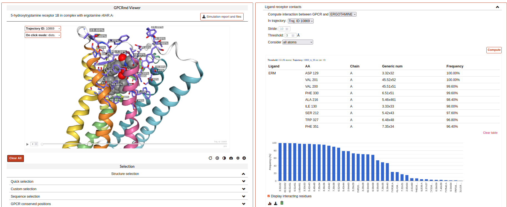{kind=link}
Salt bridges:
This tool allows you to identify the salt bridges formed through a simulation. Salt bridges are defined as any combination between these two sets: {Arg-NH1, Arg-NH2, Lys-NZ, His-NE2, His-ND1} and {Glu-OE1, Glu-OE2, Asp-OD1, Asp-OD2} in which the participating atoms are closer than 4 Angstroms. Histidine atoms are only considered if the residue is protonated. As with hydrogen bond analysis, you can select a percentage threshold, and the results include a “Show Salt Bridge” button and a “Show All” button. Furthermore, you can select an interval of frames, instead of the whole trajectory.
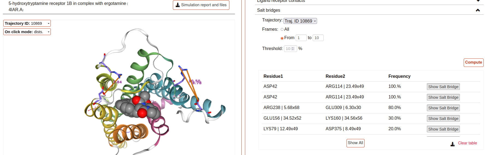{kind=link}
Distance:
This tool is used to calculate the distance between atom pairs across the different frames of a trajectory, and therefore across time. To calculate a distance, you need to indicate the pair or pairs of atoms you are interested in. This can be done in different ways:
Select a pair of atoms at the viewer screen by clicking on them and, afterward, importing the created distances with the blue arrow button.
Indicate the desired atom pairs manually, by selecting “Compute distance between” atoms and inputting a pair of atom indices at the text input fields.
Indicate the desired atom pairs manually, by selecting “Compute distance between” residues and indicating the residue, chain and atom name you are interested in. The residue number and chain name must be indicated according to the NGL selection language (ex. 50:P), and the atom name selected from the droplist.
It is also necessary to select the trajectory that will be used for the calculation. Finally, just click at Compute. Only atom pairs that are marked with a green checkmark will be considered, since the absence of a checkmark indicates an error in the input (only numbers are allowed). The result will appear as a plot of distance by time or by frame, which can be downloaded as an image. It is also possible to download the data obtained as a CSV file. Moreover, the distances calculated can be displayed at the viewer screen, in the colors indicated at the plot legend. Such distance representations can be deactivated by deselecting the “Display distance” checkbox.
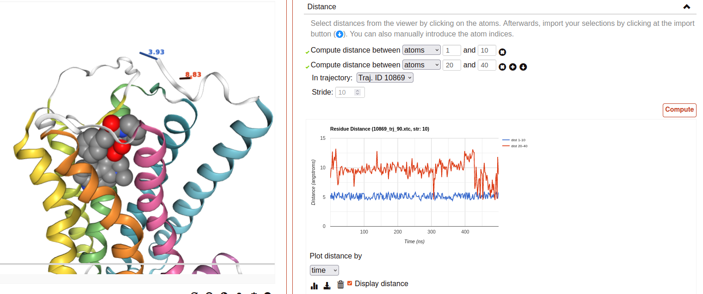{kind=link}
RMSD:
This tool computes the RMSD of all the conformations in a target trajectory to a reference conformation. It is necessary to indicate the trajectory to be used and the frames to be considered. Also, a reference frame of a given trajectory. It is possible to chose which atoms are going to be considered in the calculation: only alpha carbons, non-hydrogen protein atoms, protein C-alpha, etc. As in the case of distance analysis, the result will be shown in a plot (RMSD by time or by frame). It is possible to download the plot as an image or all the obtained data as a CSV file.
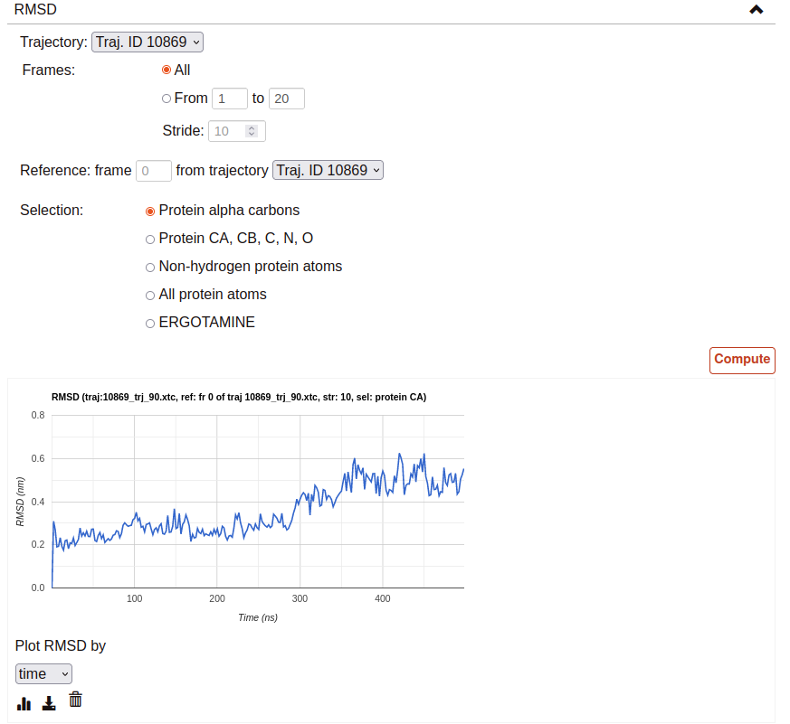{kind=link}
Water volume distribution:
Displays an averaged water density map of the MD trajectory under study. Maps are precomputed VMD VolMap Tool. They are generated only for oxygen atoms of a water molecule in a cutoff distance of 10 Å to the protein using a resolution of 1 Å. Atoms are treated as spheres using the atomic radii.
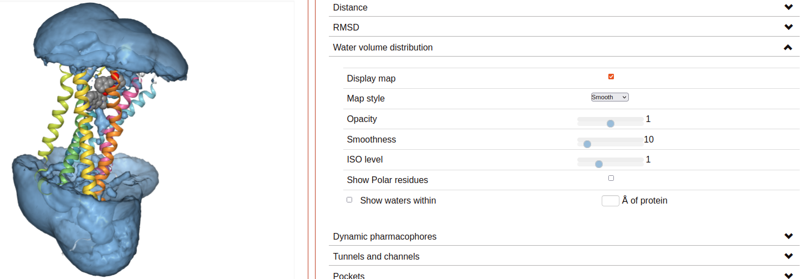{kind=link}
Dynamic pharmacophores:
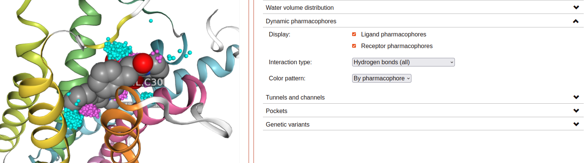{kind=link}
Tunnels and channels:
Displays the tunnels and channels formed in the receptor during the simulation. Tunnels are defined as void pathways leading from a cavity buried in a protein core to the surrounding solvent, while in channels both endings are opened to the surrounding solvent.
Tunnels/channels are precalculated using the software Caver 3.0. The starting point coordinates for apo forms and receptor-ligand structures are set to the center of mass of ligand-interacting residues in the respective PDB structure. The following input parameters are used: probe_radius=1.4, shell_radius=3, shell_depth=4. Note that we focus our analysis on the ligand-binding pocket, so tunnels/channels unrelated to the ligand-binding pocket may not be detected.
All the tunnels/channels identified in the simulation are clustered by similarity. Such clusters of identified tunnels can be displayed by selecting them in the “Clusters” column.
It is also possible to display the tunnel with the highest throughput of each cluster. As defined by Caver, the throughput of a tunnel or channel corresponds to the importance of the pathway, which is the probability that the pathway is used as a route for transportation. Tunnel throughput is calculated based on the radius and length of the tunnel. The frame at which the highest-throughput tunnel of each cluster is found can be displayed by clicking at the “Display frame x” button.
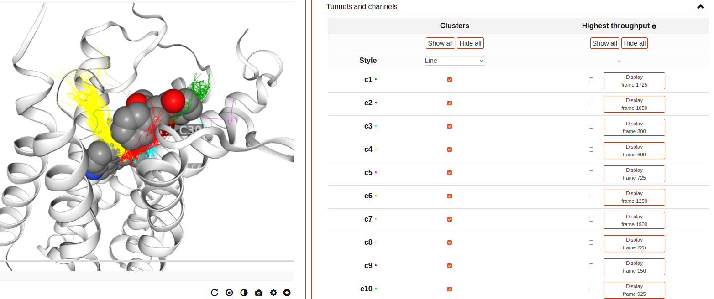{kind=link}
{kind=link}
{kind=link}